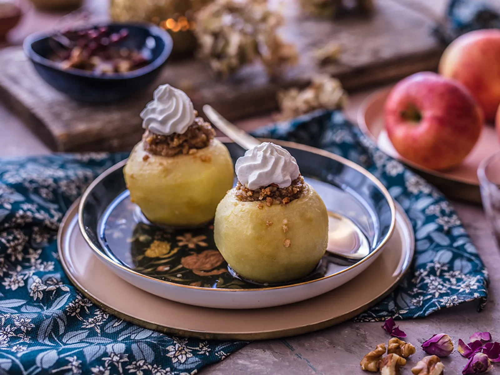

|
|---|
Krem supa od graha |
Sastojci: |
| 250g kuhanog graha |
| 1 luk/srednje veličine |
| 1 mali češalj češnjaka |
| 1 manja mrkva |
| 1 kašičica vrhom puna brašna |
| 2 kašike kiselog vrhnja + za serviranje |
| Vezica peršuna |
| Sol, papar |
| Povrtni temeljac ili povrtna supa u kocki |
| Maslac |
| Kockice hljeba ili tosta |
 |
|---|
Kremenadle u pivu |
Sastojci: |
| 4 kremenadle |
| Veća glavica luka |
| ½ goveđe kocke za supu |
| 1dcl piva |
| 1 kašičica koncentrata paradajza |
| Sol, papar, crvena paprika, peršun, bosiljak |
 |
|---|
Školjke popunjene |
Sastojci: |
| 15 listova svježeg bosiljka |
| 20kom velikih školjki(tjestenina) |
| 200g kravljeg sira |
| 250g rižote |
| 350g smrznutih listova špinata |
| 30g parmezana(narendati) |
| 1 jaje |
| so, biber |
| 150g rendane mozzarele |
 |
|---|
Pita zeljanica |
Sastojci: |
| 600g svježeg kravljeg sira |
| 4 jaja |
| 200g kajmaka |
| 200ml mlijeka |
| 200ml kiselog vrhnja |
| 250g špinata |
| 1 kašičica soli |
| Vegeta Maestro crni papar mljeveni |
| 100g maslaca |
 |
|---|
Salata od piletine i makarona |
Sastojci: |
| 300g kuhane piletine |
| 150g mrkve |
| 150g graška |
| 150g kukuruza šećerca Podravka |
| 100g gorgonzole |
| 150g makarona |
| 1 kašika senfa estragon Podravka |
| 400ml kiselog vrhnja |
| Malo soli |
 |
|---|
Pileći bataci u |
Sastojci: |
| 8-10 pilećih bataka |
| Marinada: |
| 1 kašičica soli |
| 1/2 kašičice papra |
| 1/2 kašičice majčine dušice |
| 1 kašičica(ne prepuna) slatke mljevene crvene paprike |
| Malo tucane ljute paprike |
| Na vrh kašičice curry u prahu |
| 2 režnja protisnutog ili sitno sjeckanog češnjaka |
| 2 kašike majoneze |
| 1 kašičica običnog ili dijon senfa |
| 5 kašika jogurta |
| 2 kašike maslinovog ulja |
 |
|---|
Tortilje sa žara sa |
Sastojci: |
| 400g pilećih prsa |
| 1 Vegeta Grill marinada pikantna |
| 1 ljubičasti luk |
| 1 veća crvena paprika |
| 200g Crvenog graha Podravka |
| 150g Kukuruza šećerca Podravka |
| Sol |
| Vegeta Maestro crni papar |
| 100g sira gaude |
| 10 manjih tortilja |
|  |
|---|
Tufahije |
Sastojci: |
| 8 jabuka srednje veličine(oko 1,5kg) |
| 200g šećera |
| 80g oraha |
| 1 bjelance |
| 1 limun |
| 1 šlag hit dolcela |
| 1l vode |
| 2 vanilin šećera dolcela |
 |
|---|
Plazma desert |
Čoko-plazma smjesa: |
| 1 kesica šlaga |
| 200g mljevene plazme |
| 50g prah šećera |
| 50g grama čokolade |
Puding smjesa: |
| 500ml mlijeka |
| 4 kašike šećera |
| 1 kesica pudinga od vanile |
Šlag smjesa: |
| 2 kesice krem šlaga od vanile |
| 300ml mlijeka |
Za posipanje: |
| 150g mljevene plazme |
Dekoracija: |
| 1 kesica šlaga |
| Po želji mini čoko plazmice |
 |
|---|
Džemi lady |
| 100g šećera |
| 60g šećera u prahu |
| 125ml ulja |
| 60-100g ekstra džema od borovnica Podravka |
| 90g pšeničnog oštrog brašna Podravka |
| 90g Podravka pšeničnog glatkog brašna |
| 1 kašičica Dolcela praška za pecivo |
| 1 kašičica sode Dolcela sode bikarbone |
| 1 kašičica vanilin šećera Dolcela |
| 40g kakaa |
| 200ml jogurta |
| 40ml mlijeka |